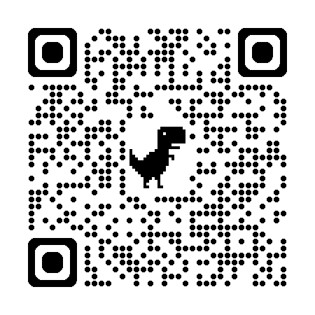

مقياس بيك للاكتئاب (BDI-II)
سجل النتائج
بيانات المريض
الاسم الكامل
العمر
بدء التشخيص الأكاديمي

اختر العبارة الأكثر دقة لوصف حالتك مؤخراً
0 / 21 تم الإجابة
عرض التقرير النهائي
مريض جديد
طباعة
سجل النتائج السابقة
رجوع للرئيسية